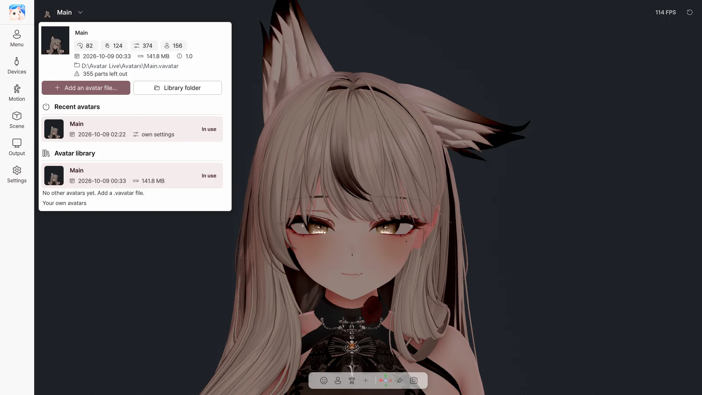

3. Start screen and avatar library#
Start screen#

When you run Avatar Live, you choose an avatar and devices on the start screen, then start.
Avatar#
| Item | What it does |
|---|---|
| Open Avatar… | Open a .vavatar file (you can also drag it onto the window) |
| Recent / Folder / Imported | Recently opened avatars / avatars in the avatar folder / avatars imported into the library |
| Click · double-click a tile | Select · start right away |
| Set as default | Make this avatar the default avatar |
| Show file | Show the file in Explorer |
| Remove | Remove it from the recent list only (the file stays) |
| Locate… | Point to a file that was moved |
| Change / Open folder (Folder tab) | Change the avatar folder / open it in Explorer |
Status: Available · Missing · Cannot open · ★ Default
Devices and start settings#
| Item | What it does |
|---|---|
| Camera switch · list | Turn on webcam tracking at start, and the camera to use |
| Preview | Check the camera image (if you are streaming, others can see it too, so be careful) |
| Microphone switch · list | Turn on the microphone (lip sync) at start, and the microphone to use |
| Test | Check that sound is coming in from the microphone |
| Face | Face tracking engine (Auto / MediaPipe / OpenSeeFace) |
| Hands | Hand tracking (MediaPipe / Ultraleap / Off) |
| Startup avatar | Ask every time / Last used / Default avatar |
| Always show the start screen | Start from this screen every time |
| ▶ Start Avatar Live | Start with the chosen avatar |
Safe Start#
Starts without the webcam, microphone or trackers. Use it when a device problem stops Avatar Live from starting. Hold Shift while launching, and keep holding it until the start screen appears.
Recovery screen#
Appears on the next launch if Avatar Live closed while loading the previous avatar.
| Button | What it does |
|---|---|
| Try Again | Load the same avatar again |
| Choose Another Avatar | Go to the start screen |
| Safe Start | Load the same avatar without devices |
Switching avatars while running#

Click the avatar name at the top left to open the avatar library.
| Item | What it does |
|---|---|
| Avatar info | Number of PhysBones, Contacts, expression parameters and menu items; date; size |
| Add an avatar file… | Import a .vavatar into the library |
| Library folder | Open the library folder |
| Recent avatars | Switch to a recently opened avatar |
| Avatar library | Switch to an avatar in the library, 🗑 delete (settings are kept) |
| Your own avatars | How to use the Exporter |
When you switch avatars, your settings are saved and Avatar Live restarts with the new avatar. A webcam and microphone that were on are turned on again.
Returning to the start screen#
- Logo at the top left → Restart
- Settings › Start-up › Restart